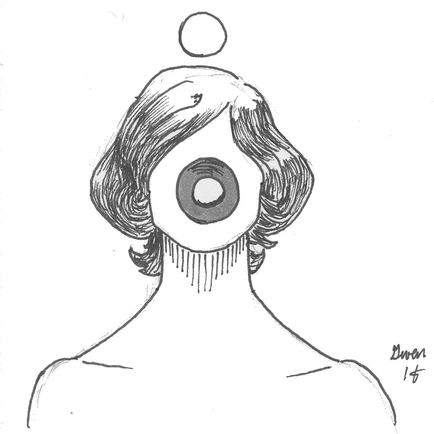

2200 : le jugement des dieux
Il y a quelques instants encore, vous étiez vivant. Maintenant vous êtes assis dans une petite salle d’attente. Le Purgatoire, d’après l’inscription que vous distinguez à l’envers sur la porte vitrée. Vous attendez impatiemment que le petit homme avec la veste grise de l’accueil vous fasse signe d’entrer dans la pièce à côté. Là où se jouera votre après-vie.
Un jeu de rôle sans meneur pour 3 ou 4 joueurs, sans préparation nécessaire. Il comporte très peu de jets mais nécessite deux dés à 8 faces (d8), trois jetons quelconques, et optionnellement un chronomètre.
-
Article de blog présentant le jeu : https://chezsoi.org/lucas/blog/2200-le-jugement-des-dieux.html
Synopsis
Vous allez chacun jouer un dieu, ancien ou moderne, ayant la charge de statuer du sort de mortels décédés en cette année 2200. Peut-être est-ce votre rôle depuis toujours ? Peut-être cette charge passe de dieu en dieu avec les temps ? Quoi qu’il en soit, vous avez chacun vos propres critères pour juger des actions des hommes, de leur karma et de la valeur de leur âme. Et selon votre décision elle finira en Enfer ou au Paradis.

Tour à tour, vous allez mettre de côté votre rôle divin pour incarner un Mortel dont les actions seront passées au crible par un panel de dieux. Sa vie s’est déroulée au XXIIe siècle, dans le futur de notre monde actuel, devenu légèrement cyberpunk et dystopique.
Règle d’or : « oui et… », dans ce jeu, comme dans le théâtre d’improvisation, que vous incarniez un Mortel ou une divinité, ne mettez jamais en doute la parole d’un autre joueur. Vous pouvez rebondir, compléter, enjoliver, nuancer les faits, mais une fois énoncés ils font valeur de vérité. S’il vous faut une raison diégétique, considérez que le tribunal empêche tout mensonge.
Dieux et deesses
Tirez au hasard quel est votre domaine divin : lancez deux dés et choisissez le résultat que vous préférez. N’hésitez pas non plus à adopter un choix n’apparaissant pas dans cette liste.
Domaine divin
- L’argent
- La productivité
- Les animaux et les plantes
- La connaissance et la technologie
- La fidélité et les promesses
- La guerre
- La bravoure
- Ce qui inspire ou fait rêver
Appropriez-vous ce domaine comme vous le souhaitez. Vous pouvez vous choisir une spécialité, ou décider que vous êtes une divinité double et couvrir d’autres domaines.
Prenez ensuite le temps de réfléchir au points suivants, puis décrivez-les aux autres joueurs :
-
quel est votre nom ? N’hésitez pas à prendre celui d’un dieu connu.
-
quelle est votre apparence ?
-
êtes-vous vénéré quelque part dans le monde d’aujourd’hui
-
quels sont vos pouvoirs emblématiques ?
-
quels comportement des Mortels condamnez-vous et récompensez-vous ? Un dieu de l’argent peut tout à fait considérer qu’il s’agit d’une force corruptrice et que les plus nobles des Mortels sont ceux qui y résistent. Soyez bien clairs avec les autres joueurs sur vos valeurs et quelle ligne de conduite vous avez en estime.
Le tribunal

Lancez chacun un dé, et départagez les égalités. Du résultat le plus petit au plus élevé, répondez chacun à l’une de ces questions en détail :
-
Depuis le tribunal on peut admirer une vue aérienne d’une ville contemporaine. Comment se nomme cette ville ? Décrivez-la en esquissant rapidement quelques lieux ou quartiers notoires.
-
Depuis le tribunal toujours, on peut entrevoir le Paradis. Qu’est-ce qui s’en dégage qui attire autant les mortels ? Décrivez ce petit aperçu de Paradis.
-
On discerne également l’entrée de l’Enfer. Quel pièce ou lieu peut-on distinguer ? Est-ce désert ? Décrivez ce petit aperçu d’Enfer.
-
Enfin, à quoi ressemble la salle du jugement ? S’agit-il d’un lieu banal ? Ou bien un palace ? Décrivez où se tiennent les dieux et le Mortel, et comment il est possible d’apercevoir les lieux précédemment décrits : à travers une fenêtre, l’entrebâillement d’une porte, via un vieil écran cathodique, ou autrement ?
À 3 joueurs, tout le monde participe à cette dernière description.
Cet ordre de réponse aux questions déterminera également l’ordre de passage en jugement des joueurs.
Ce tribunal a un employé permanent : le Passeur, qui accueille les mortels dans le Purgatoire, puis les amène au tribunal et à leur destination finale.
Le Mortel
Ne créez votre Mortel que lorsque c’est votre tour d’être jugé. Lancez un d8 dans chaque table ci-dessous afin de définir quelques traits fondamentaux de votre personnage. Vous êtes libre de relancer les dés ou de choisir des traits issus de votre imagination. Les autres joueurs, incarnant les Dieux, prennent des notes et peuvent commencer à préparer votre Nécrologie.
Prénom
- Enki
- Alcide
- Jill
- Channon
- John
- Rose
- Julien
- Oona
Nom
- Bilal
- Nikopol
- Bioskop
- Yarrow
- Difool
- Walker
- Solédango
- Sarango
Réputation
- Manipulateur
- Violent
- Amoral
- Opportuniste
- Dépravé
- Fasciste
- Nihiliste
- Fanatique
Milieu d’origine
- Ouvrier dans l’industrie métallurgique ou les mines
- Bourgeoisie aisée des plus hauts gratte ciels
- Ghetto de cité flottante
- Hippie protecteur des dernières forêts
- Religieux bouddhiste ou hindou
- Marin passeur de réfugiés climatiques
- Station spatiale
- Androïde ou transhumain
Domaine d’activité
- Élu parlementaire controversé
- Homme de main d’une mafia
- Scientifique banni
- Astronaute devenu SDF
- Inspecteur de police ou indic’
- Journaliste tête brûlée
- Militant subversif
- Prêtre d’un dieu oublié

Le jugement
Le joueur à la gauche du Mortel interprète le Passeur quelques instants. Il invite le Mortel à le suivre dans le tribunal, où il lui énonce les titres des dieux qui y siègent, puis l’introduit à l’assemblée. Chaque joueur peut jouer le Passeur différemment: protocolaire, complice, incongru…
Le dieu du joueur incarnant le Mortel est bien sûr absent.
Si vous disposez d’un sablier, mettez-le à la disposition des dieux : dès que l’un d’eux estime que le Mortel arrive au terme de son temps de parole, il peut renverser le sablier devant lui, puis l’interrompre lorsqu’il sera écoulé.
La necrologie

En commençant à gauche du Mortel, chaque dieu résume brièvement un pan de sa vie, de manière factuelle, parmi :
- sa naissance et son enfance
- un fait marquant de sa vie
- les circonstances de sa mort
Vous pouvez vous inspirer des événements ci-dessous :
- le scandale des effets secondaires du Solivox de 2186
- les vagues de délation et d’expulsion pour crime de solidarité de 2191
- les 10 jours de black-out électronique de mai 2188
- la « dernière marée noire » de 2179
- l’épidémie de narcolepsie de 2176
- l’affaire du tueur en série virtuel de 2194
- le coup d’état corporatiste de 2183
- l’affaire du serial killer des mondes virtuels de 2194
- l’impact des nano-drogues rendant précognitifs
- la révolte d’androïdes mineurs de métaux rares en 2196
- la lutte pour les droits civiques des clones de 2192
- la seconde guerre froide du milieu du XXIIe siècle
- l’arrivée de réfugiés aliens en 2199
Pour tirer un événement au hasard dans cette table, lancez un d8 et reportez le résultat dedans, en sautant par-dessus ceux déjà utilisés dans la partie.
Si la vie du Mortel avait de la valeur aux yeux de certains dieux, ceux-ci ont peut-être usé de leur influence mystique, de leurs pouvoirs, pour influencer sur son existence. Si c’est le cas, chaque dieu est libre de le mentionner à cette étape, lorsqu’il décrit un élément biographique.
Le plaidoyer
Le dieu face au Mortel lui explique ce qui va se jouer, et l’invite à justifier pourquoi il mérite une après-vie heureuse.
Le Mortel a 5min pour parler librement. Il peut mentionner tout ce qu’il souhaite de sa vie passée, y compris en inventant de nouveaux épisodes.
L’instruction
En commençant à gauche du Mortel, chaque dieu expose un événement où les actions de ce dernier (ou son inaction) sont allées à l’encontre de sa ligne de conduite divine.
Il peut s’agir de situations totalement banales sur lesquelles le Mortel ne s’attendait pas à être jugé, mais n’hésitez pas non à choisir des événements graves voir même ayant eu un impact majeur sur la société.
Si vous êtes charitable, vous pouvez même simplement exposer une situation où les enjeux étaient forts, sans expliciter les actions du Mortel, et lui laisser les décrire.
Le Mortel répond au fur et à mesure à chaque accusation divine et tente de se défendre de ce pour quoi on l’accuse.

En tant que dieu omniscient, votre objectif est de châtier les Mortels qui sont sortis du droit chemin selon vos valeurs, et de récompensez ceux qui, au contraire, ont respecté votre code moral. Vous pouvez même décider de recruter les plus valeureux d’entre eux à votre service !
Décrivez le comportement du Mortel dont vous avez été témoin, et en quoi il vous paraît initialement condamnable, mais défendez-le aussi face aux autres dieux quand ses actions ont de la valeur à vos yeux !
N’oubliez pas votre stature de dieu : vous êtes au-dessus des mortels et ils doivent s’adresser avec déférence envers vous.
En tant que Mortel, votre but est de convaincre vos juges que dans l’ensemble vous avez vécu votre vie au diapason de leurs valeurs divines, même si vous découvrez tout juste ces critères !
Le conciliabule
Les dieux décident de leur verdict en considérant les actions du Mortel vis à vis de leur domaine. Ils prennent l’ensemble des faits évoqués en considération : si la réponse du Mortel aux accusations des autres dieux plaît à un dieu, libre a lui de le sauver.
Chaque dieu est souverain pour déterminer quelles actions il estime mériter châtiment vis à vis de son domaine.
Les dieux peuvent échanger brièvement entre eux leurs points de vue, voir défendre un Mortel qu’ils apprécient face aux autres divinités.
Une fois leur décision prise, ils passent au vote : ils prennent chacun un des jetons au centre de la table. Ils le placent ensuite secrètement dans leur main droite pour sauver l’âme du Mortel, et dans la gauche sinon.

La prise a partie
Une fois la décision des dieux prise, mais avant qu’ils ne révèlent leurs mains, le Mortel peut réclamer à un dieu en particulier d’accomplir un défi de son choix pour prouver sa valeur : répondre à une énigme, renier ou sacrifier quelque chose, accomplir un exploit…
Le dieu pris à partie est libre de refuser. S’il accepte, à lui d’énoncer les termes du challenge.
Ensuite, le joueur incarnant le Mortel lance un d8 :
-
si le résultat est 6, 7 ou 8, le Mortel réussit, il surmonte le défi ! Il « achète » le vote du dieu défié, qui met son jeton dans sa main droite. Le joueur qui incarne le Mortel a la parole pour décrire comment s’est déroulé le défi.
-
si le résultat est 1, 2 ou 3, le Mortel échoue face au challenge du dieu défié. Le joueur qui incarne ce dernier a la parole pour décrire comment le Mortel a failli.
-
si le résultat est 4 ou 5, le joueur incarnant la déité respectivement à gauche / à droite du dieu défié a la parole pour décrire comment se déroule le défi.
Si le Mortel échoue, le dieu défié peut toujours changer son vote s’il le souhaite.
La sentence
Les dieux révèlent simultanément leur main droite. Si au moins 2 jetons sont révélés, l’âme du Mortel est sauvée.
Les joueurs incarnant le Mortel et le Passeur peuvent alors interpréter rapidement la scène de fin du jugement et la sortie du tribunal, tandis que les dieux restent stoïques.
Dieux et Mortels doivent respecter la sentence du tribunal. Pour autant, si un dieu n’est pas satisfait, il peut annoncer à la fin de cette dernière étape qu’il use de ses pouvoirs pour châtier ou récompenser le Mortel ou son entourage : restent en jeu son souvenir, son héritage, son œuvre, sa réincarnation peut-être…
Variante « sort de l’humanite »
Les Mortels ne plaident plus pour leur âme, mais pour sauver l’humanité. Le déroulement de chaque phase de jugement change alors : plus de nécrologie ni de plaidoyer, et l’étape d’instruction est découpée en phases d’accusation / défense, une par dieu face au Mortel :
- accusation : chaque divinité mentionne un événement, que le Mortel a vécu, démontrant la déchéance de l’homme selon elle, et selon son domaine.
- défense : le Mortel s’exprime ensuite, et tente par tous les moyens rhétoriques de convaincre les divinités de la valeur du genre humain.
Les phases de Conciliabule & Prise à partie sont identiques.
Licence et sources
 Ce jeu a été conçu par Lucas Cimon et est sous licence CC BY 4.0. Version: 1.1.
Ce jeu a été conçu par Lucas Cimon et est sous licence CC BY 4.0. Version: 1.1.
Si vous le testez, songez à me laisser un petit commentaire sur mon blog.
Merci à Henri & Loïc pour le playtest, ainsi qu’à 1 MJ de Trop pour avoir enregistré & partagé leur partie sur Youtube.
Polices : HACKED par David Libeau.
Illustrations :
- deux dessins d’Elliot Jolivet aka Tenseï réalisés lors d’Inktober 2017
- untitled par auto-spiral - CC BY-NC-SA 3.0
- donde deje la llave, The gulls cyberpunk, Halloween Series 3 & Furia de Dumaker
Inspirations : beaucoup de BDs (que vous pouvez vous amuser à retrouver à partir de la table de noms de Mortel) ainsi que les jeux de rôle Urban Armies et Le Dernier Café Sur la Droite.